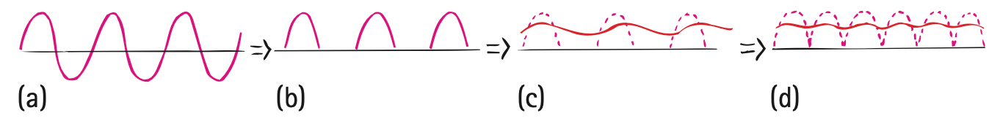

Direct Current and Alternating Current
Electric current may be dc or ac. By dc, we mean direct current, which refers to the flowing of charges in one direction. A battery produces direct current in a circuit because each terminal of a battery always has the same sign: The positive terminal is always positive, and the negative terminal is always negative. Electrons move from the repelling negative terminal toward the attracting positive terminal, always moving through the circuit in the same direction. Even if the current occurs in unsteady pulses, so long as electrons move in one direction only, it is dc.
Alternating current (ac) acts as the name suggests. Electrons in the circuit are moved first in one direction and then in the opposite direction, alternating to and fro about relatively fixed positions. This is accomplished by alternating the polarity of voltage at the generator or other voltage source. Nearly all commercial ac circuits in North America involve voltages and currents that alternate back and forth at a frequency of 60 cycles per second. This is 60-hertz current. In some places, 25-hertz, 30-hertz, or 50-hertz current is used. Throughout the world, most residential and commercial circuits are ac because electric energy in the form of ac can easily be stepped up to high voltage for long-distance transmission with small heat losses, then stepped down to convenient voltages where the energy is consumed. Why this is so will be discussed in Chapter 25.

The voltage of ac in North America is normally 120 V. In the early days of electricity, higher voltages burned out the filaments of electric lightbulbs. Tradition has it that 110 V was first adopted as the standard because it made bulbs of the day glow as brightly as a gas lamp. So the hundreds of power plants built in the United States prior to 1900 produced electricity at 110 V (or 115 V or 120 V). By the time electricity became popular in Europe, engineers had figured out how to manufacture lightbulbs that would not burn out so fast at higher voltages. Power transmission is more efficient at higher voltages, so Europe adopted 220 volts as the standard. The United States continued with 110 V (today officially 120 V) because so much 110-V equipment was already installed. (Certain appliances, such as electric stoves and clothes dryers, presently use higher voltage.)
The primary use of electric current, whether dc or ac, is to transfer energy quietly, flexibly, and conveniently from one place to another.
Converting AC to DC
Household current is ac. The current in a battery-operated device, such as a laptop computer, is dc. You can operate these devices on ac instead of batteries with an ac–dc converter. In addition to a transformer to lower the voltage (see Chapter 25), the converter uses a diode, a tiny electronic device that acts as a one-way valve to allow electron flow in one direction only (Figure 23.10). Since alternating current changes its direction each half-cycle, current passes through a diode only half of each period. The output is a rough dc, and it is off half the time. To maintain continuous current while smoothing the bumps, a capacitor is used (Figure 23.11).
Figure 23.10 was omitted because no matching captured image was supplied.

Recall from Chapter 22 that a capacitor acts as a storage reservoir for charge. Just as it takes time to raise the water level in a reservoir when water is added, it takes time to add or remove electrons from the plates of a capacitor. A capacitor, therefore, produces a retarding effect on changes in the flow of charge. It opposes changes in voltage and smoothes the pulsed output.